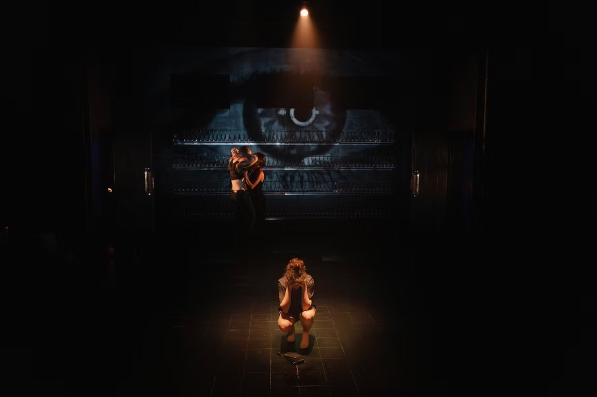
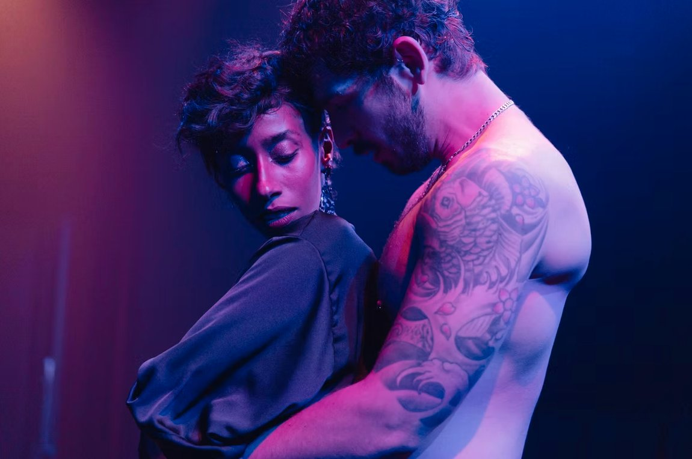
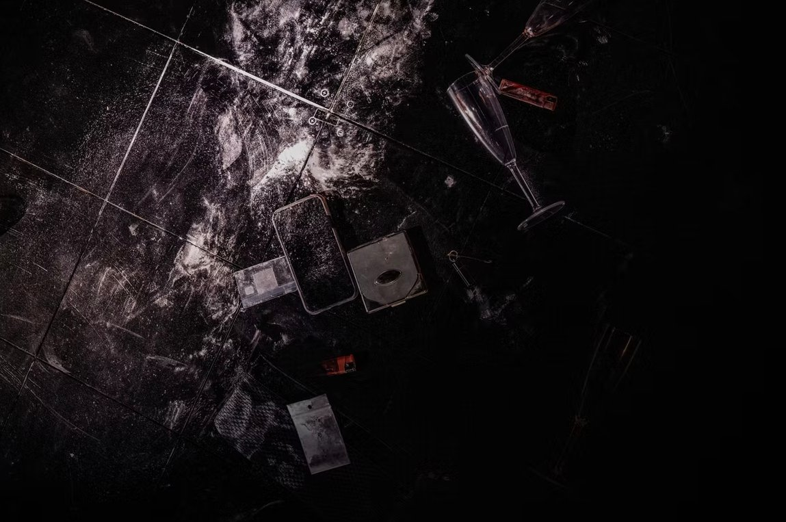
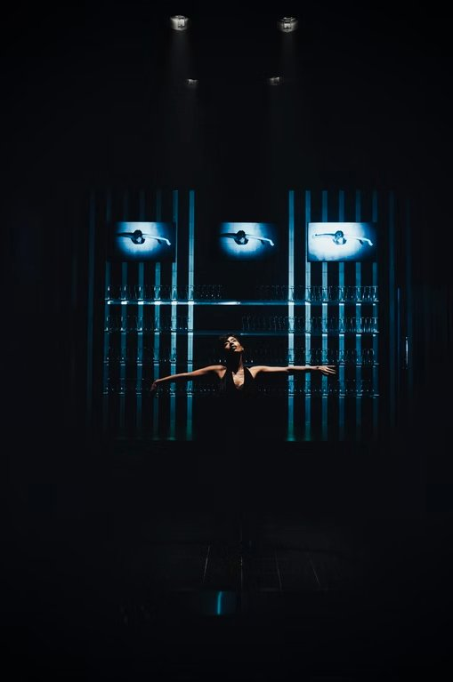
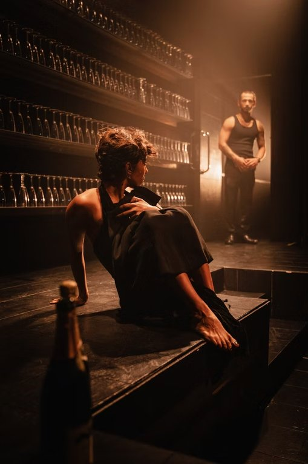
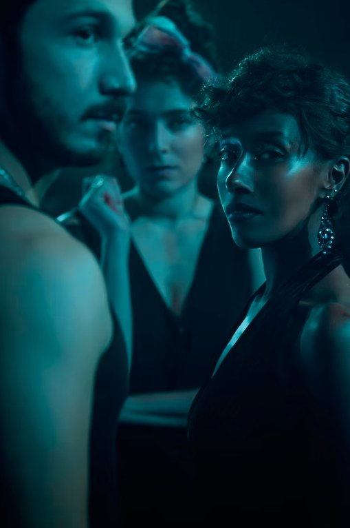

מאת פולי סטנהם על פי סטרינדברג. בימוי: עמית אפשטיין.
תקציר
עיבוד חדש לקלאסיקה של סטרינדברג על משולש האהבה האכזרי בין בת העשירים לעובדי הבית — ז'ולי האייקונית שבה לבמה בגרסה עכשווית השומרת על שאלות המעמד ומלחמת המינים.
קונספט חזותי
עיצוב המולטימדיה של ניק דריידן יצר מטפורה חזותית צורבת לשבי הפנימי של ז'ולי: דימוי חוזר של ציפור בכלוב, מצולם באסתטיקת רנטגן ומוקרן כצללית שלד שברירית. מערך מצלמות חיות צילם את השחקנים מזוויות משתנות והפך רגעי אינטימיות לקלוז־אפים חשופים ומרוסקים; השידור בזמן אמת נשזר במיפוי וידאו והפך את חלל הבמה לארכיטקטורה נזילה — מראה להתפרקותה הנפשית של ז'ולי.
גלריה





